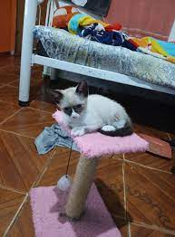
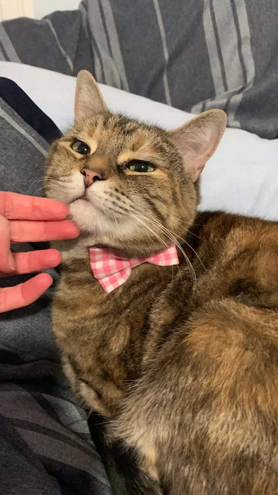
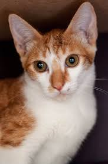
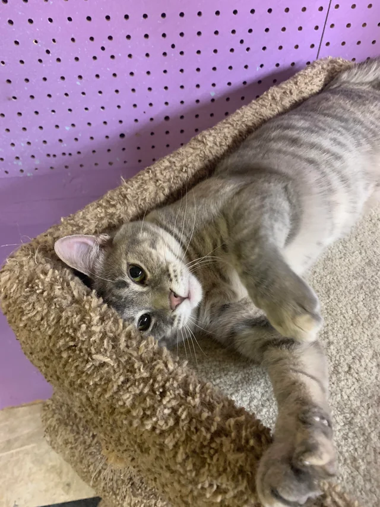
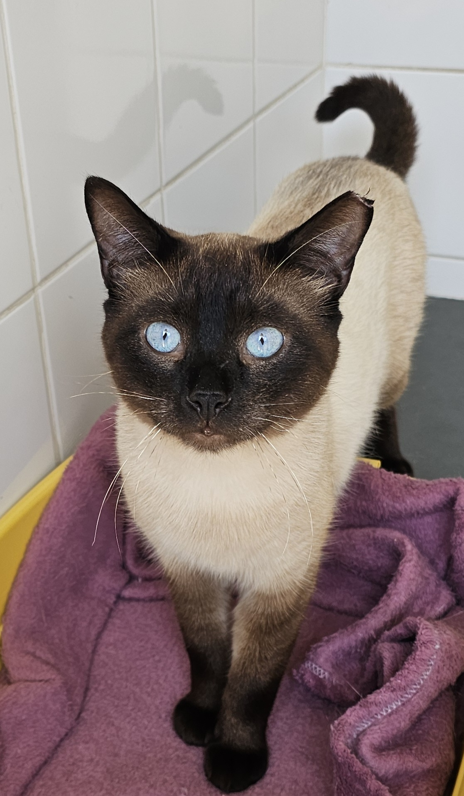
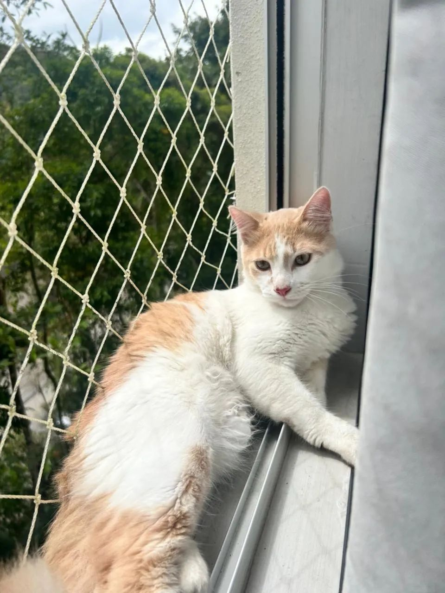
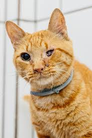

Para Adoção









Somos uma ONG formada por amantes de gatos que acreditam que todo animal merece amor, cuidado e um lar seguro. Nossa jornada começou de forma simples, com um pequeno grupo de pessoas que não conseguiam ficar indiferentes diante do sofrimento de gatos abandonados nas ruas. O que antes era apenas um gesto de compaixão individual se transformou em um movimento coletivo, que hoje salva e transforma vidas diariamente.
Nosso propósito é resgatar, tratar, cuidar e encontrar famílias responsáveis para gatinhos que foram vítimas de abandono, maus-tratos ou negligência. Cada história que chega até nós é única, e cada olhar que resgatamos carrega um pedido silencioso de amor e confiança. Trabalhamos com responsabilidade e carinho para que cada um desses pequenos tenha a chance de recomeçar cercado de afeto e segurança.
Desde nossa fundação, temos nos dedicado a garantir que cada felino receba cuidados completos — desde o atendimento veterinário, alimentação balanceada e vacinação, até o carinho e o conforto de um lar temporário. Sabemos que a recuperação não é apenas física: é também emocional. Por isso, damos a cada gato o tempo que ele precisa para voltar a confiar no ser humano.
Acreditamos que adotar é um ato de amor e compromisso que muda duas vidas: a do gato e a da pessoa que o acolhe. Por isso, seguimos um processo de adoção responsável, com acompanhamento e orientação, para garantir que cada família esteja realmente preparada para essa linda jornada de convivência e cuidado.
Nosso trabalho só é possível graças à dedicação de nossos voluntários, lares temporários, padrinhos e doadores, que doam seu tempo, carinho e recursos para manter nossa missão viva. São pessoas que acreditam, como nós, que o amor pelos animais é uma força capaz de transformar o mundo. Cada ajuda — por menor que pareça — representa um passo a mais rumo a um futuro melhor para os nossos amigos de quatro patas.
Além do resgate e da adoção, desenvolvemos campanhas de conscientização sobre a importância da castração, a posse responsável e o respeito à vida animal. Visitamos escolas, participamos de eventos e compartilhamos informações nas redes sociais, porque acreditamos que a educação é a base para uma sociedade mais empática e justa.
Também trabalhamos em parceria com clínicas veterinárias, pet shops e empresas locais, que apoiam nossa causa e contribuem para que possamos continuar oferecendo os melhores cuidados possíveis aos nossos gatinhos. Essas parcerias fortalecem nossa rede de amor e nos permitem ajudar ainda mais animais.
Nosso maior objetivo é ver cada gato em um lar feliz, ronronando de alegria e cercado de amor. Sabemos que ainda há muito a fazer, mas a cada resgate, a cada adoção e a cada gesto solidário, reforçamos nossa certeza de que estamos no caminho certo. Porque salvar vidas não é apenas nossa missão — é o que dá sentido à nossa existência como ONG e como seres humanos.
Se você também acredita que todos os animais merecem uma segunda chance, junte-se a nós. Adote, apadrinhe, contribua ou divulgue nosso trabalho. Com o seu apoio, podemos continuar oferecendo esperança, carinho e dignidade a quem mais precisa — um ronronar de gratidão por vez. 🐾